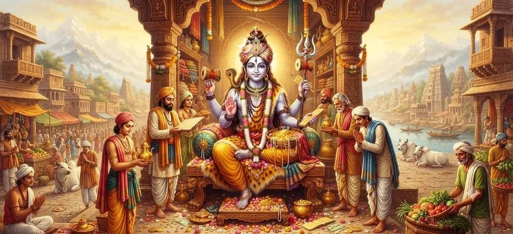

शिव का वैश्यनाथ के रूप में अवतार
शतरुद्र संहिता का अध्याय 26 पवित्र कथा प्रस्तुत करता है शिव का वैश्यनाथ के रूप में अवतार। यह अध्याय इसी क्रम को जारी रखता है भगवान शिव की दिव्य अभिव्यक्तियाँ और एक और पवित्र रूप प्रकट करती हैं जिसके माध्यम से उनकी दिव्य उपस्थिति का चिंतन किया जाता है।
वैश्यनाथ अभिव्यक्ति व्यापक पवित्र परंपरा का हिस्सा है शिव के अनेक रूपों एवं अवतारों का वर्णन। ये आख्यान भक्त को दैवीय कृपा, भक्ति, विश्वास, पर चिंतन करने के लिए प्रोत्साहित करें धर्म, और आध्यात्मिक उद्देश्य।
यह अध्याय शिव के पिप्पलाद अवतार - भाग 2 और का अनुसरण करता है स्वाभाविक रूप से अगले पवित्र आख्यान, अवतार की ओर ले जाता है द्विजेश्वर.
अध्याय 26 की मुख्य बातें
वैश्यनाथ अवतार
वैश्यनाथ के रूप में भगवान शिव की पवित्र अभिव्यक्ति प्रस्तुत करता है।
ईश्वरीय कृपा
शिव की दयालु और उद्देश्यपूर्ण उपस्थिति को दर्शाता है।
दिव्य अभिव्यक्ति
एक और पवित्र रूप दिखाता है जिसके माध्यम से शिव की दिव्य उपस्थिति होती है खुलासा.
भक्ति
भगवान शिव के प्रति सच्ची स्मृति और भक्ति को प्रोत्साहित करता है।
आध्यात्मिक अनुशासन
विश्वास, धैर्य, अनुशासन और धार्मिक आचरण को प्रोत्साहित करता है।
दिव्य निरंतरता
के अवतरण की ओर पवित्र क्रम जारी रखता है द्विजेश्वर.
इस अध्याय में मुख्य विषय
वैश्यनाथ का परिचय
अध्याय 26 शिव के अवतार को वैश्यनाथ के रूप में प्रस्तुत करता है शिव के दिव्य रूपों के अनुक्रम के भीतर पवित्र अभिव्यक्ति। अध्याय एक से शतरुद्र संहिता के आंदोलन को जारी रखता है दूसरे के प्रति अभिव्यक्ति.
वैश्यनाथ की अभिव्यक्ति पाठक को चिंतन के लिए आमंत्रित करती है पवित्रता के अनुसार ईश्वर स्वयं को कई तरीकों से प्रकट कर सकता है उद्देश्य.
शिव की दिव्य अभिव्यक्ति
शिव का वर्णन अनेक पवित्र अभिव्यक्तियों के माध्यम से किया गया है सर्वोच्च भगवान के एक विशेष आयाम को प्रकट करना। वैश्यनाथ शिव की असीमता के इस व्यापक पवित्र दर्शन का हिस्सा बन जाता है उपस्थिति.
भक्त को बाहरी रूप से परे देखने के लिए प्रोत्साहित किया जाता है के माध्यम से प्रस्तुत शाश्वत दिव्य वास्तविकता पर चिंतन करें अवतार.
आध्यात्मिक महत्व
वैश्यनाथ की कथा को एक अनुस्मारक के रूप में देखा जा सकता है दैवीय अभिव्यक्तियाँ आध्यात्मिक उद्देश्य से जुड़ी हैं। पवित्र कहानियाँ साधक को अपने भीतर के ईश्वर को पहचानने के लिए प्रोत्साहित करती हैं जीवन की परिस्थितियाँ.
इसलिए यह अध्याय चिंतन का अवसर बन जाता है, भक्ति, और शिव की उपस्थिति के बारे में गहरी जागरूकता।
ईश्वरीय उद्देश्य
शिव के अवतारों का पवित्र क्रम दिव्यता प्रस्तुत करता है सर्वोच्च भगवान की सार्थक अभिव्यक्ति के रूप में अभिव्यक्तियाँ। वैश्यनाथ इसी सतत क्रम से संबंधित हैं।
भक्त के लिए, यह सावधान रहने के लिए एक अनुस्मारक प्रदान करता है आध्यात्मिक पाठ पवित्र आख्यानों के बजाय निहित हैं उन्हें केवल ऐतिहासिक या पौराणिक वृत्तांतों के रूप में देखना।
भक्ति और आस्था
शिव की दिव्य अभिव्यक्ति की कहानी स्वाभाविक रूप से भक्ति को आमंत्रित करती है और स्मरण. सच्ची भक्ति विश्वास से मजबूत होती है, विनम्रता, अनुशासन और ईश्वर के साथ एक स्थिर संबंध।
आस्था भक्त को समर्पित रहने की शक्ति देती है परिस्थितियाँ कठिन होने पर भी नेक मार्ग अपनाएँ।
ईश्वरीय कृपा एवं मार्गदर्शन
शिव की अभिव्यक्तियों को पारंपरिक रूप से श्रद्धा के साथ देखा जाता है ईश्वरीय कृपा के लिए. वैश्यनाथ कथा चिंतन को प्रोत्साहित करती है रूपों में प्रकट होने वाले दिव्य मार्गदर्शन की संभावना और सामान्य अपेक्षा से परे परिस्थितियाँ।
भक्त को धैर्य और विश्वास विकसित करने के लिए प्रोत्साहित किया जाता है ईमानदारी से आध्यात्मिक अभ्यास जारी रखना।
आध्यात्मिक पाठ
शिव की अभिव्यक्तियों के क्रम से एक महत्वपूर्ण प्रतिबिंब वह यह कि आध्यात्मिक जीवन में स्थिरता की आवश्यकता होती है। भक्ति पर निर्भर नहीं रहना चाहिए अनुकूल परिस्थितियों पर ही.
विश्वास, अनुशासन, विनम्रता, धैर्य और स्मरण मदद कर सकते हैं साधक आध्यात्मिक रूप से स्थिर रहता है।
अध्याय 25 से संबंध
अध्याय 25 पिप्पलाद के साथ इस अध्याय से ठीक पहले आता है शिव का अवतार - भाग 2। अध्याय 26 फिर पवित्र को आगे बढ़ाता है वैश्यनाथ के रूप में शिव के अवतार का क्रम।
यह प्रगति शतरुद्र की व्यापक संरचना को बनाए रखती है संहिता, जहां क्रमिक दैवीय अभिव्यक्तियाँ एक सतत रूप बनाती हैं पवित्र आख्यान.
द्विजेश्वर में परिवर्तन
पवित्र क्रम वैश्यानाथ से आगे दूसरे की ओर जारी रहता है भगवान शिव की अभिव्यक्ति. अगला अध्याय अवतार प्रस्तुत करता है द्विजेश्वर का.
एक अवतार से दूसरे अवतार में परिवर्तन अमीरों को उजागर करता है विभिन्न प्रकार के रूप जिनके माध्यम से पवित्र परंपरा प्रस्तुत होती है शिव की उपस्थिति.
अध्याय 26 पर चिंतन
वैश्यनाथ के रूप में शिव का अवतार भक्त को चिंतन करने के लिए आमंत्रित करता है अनेक रूप जिनके माध्यम से दिव्य उपस्थिति प्रकट होती है। पवित्र कथा को भक्ति, धैर्य, विनम्रता, आदि के साथ प्रस्तुत किया जा सकता है आध्यात्मिक समझ के प्रति खुलापन।
महादेव को याद करके ईमानदारी और धर्म के साथ जीवन व्यतीत किया जा सकता है एक पवित्र कहानी को पढ़ने को व्यक्तिगत आध्यात्मिक में बदलना अभ्यास.
अध्याय 26 की मुख्य शिक्षाएँ
आस्था
आध्यात्मिक के हर चरण में ईश्वर में विश्वास बनाए रखें जिंदगी.
भक्ति
शिव का सच्चे मन से स्मरण आध्यात्मिक हृदय को मजबूत बनाता है।
धैर्य
आध्यात्मिक समझ अक्सर धैर्य के माध्यम से धीरे-धीरे विकसित होती है और चिंतन.
ईश्वरीय कृपा
ईमानदारी से आध्यात्मिक अभ्यास जारी रखते हुए ईश्वरीय कृपा पर भरोसा रखें।
धर्म
सच्चे और धार्मिक आचरण से भक्ति झलके।
नम्रता
विनम्रता आध्यात्मिक ज्ञान को दैनिक जीवन में सार्थक बनाती है जिंदगी.
आध्यात्मिक चिंतन
वैश्यनाथ के रूप में शिव का अवतार भक्त को याद दिलाता है कि कई पवित्र अभिव्यक्तियों के माध्यम से ईश्वर का चिंतन किया जा सकता है। आध्यात्मिक जीवन आस्था, भक्ति, धैर्य से मजबूत होता है। विनम्रता, और ईमानदार आचरण. किसी पवित्र आख्यान को देखने के बजाय केवल एक दूर की कहानी के रूप में, साधक इसकी शिक्षाओं का उपयोग कर सकता है स्मरण, चिंतन और आंतरिक परिवर्तन का अवसर। हृदय में महादेव के साथ, पवित्र यात्रा शिव की अभिव्यक्ति भक्ति और जागरूकता की यात्रा बन जाती है।
अध्याय 26 का संदेश जीना
अध्याय के संदेश को दैनिक जीवन में लाया जा सकता है शिव का सच्चे मन से स्मरण और निरंतर आध्यात्मिक अभ्यास।
सच बोलना, जिम्मेदारियाँ निभाना, दया दिखाना, और कठिनाइयों के दौरान धैर्य बनाए रखना व्यावहारिक अभिव्यक्तियाँ हैं भक्ति का.
भक्त प्रार्थना, ध्यान, पढ़ने के लिए भी समय निकाल सकता है पवित्र ग्रंथ, और महादेव का स्मरण।
प्रमुख आध्यात्मिक अवधारणाएँ
सर्वोच्च भगवान जिनकी दिव्य अभिव्यक्तियाँ अनेक पवित्र रूपों में प्रकट होती हैं प्रपत्र.
इस अध्याय में शिव का पवित्र स्वरूप प्रस्तुत किया गया है।
प्रेमपूर्ण भक्ति स्मरण और सच्चे आचरण के माध्यम से व्यक्त की गई।
धार्मिक जीवन जो भक्त को आध्यात्मिक अखंडता की ओर मार्गदर्शन करता है।
दैवीय कृपा जो भक्त की आध्यात्मिक यात्रा का समर्थन करती है।
प्रार्थना, स्मरण के माध्यम से निरंतर आध्यात्मिक अभ्यास, अनुशासन, और चिंतन.
अध्याय सारांश
शतरुद्र संहिता अध्याय 26, शिव का वैश्यनाथ के रूप में अवतार, के भीतर भगवान शिव की एक और पवित्र अभिव्यक्ति प्रस्तुत करता है दिव्य अवतारों का निरंतर क्रम। अध्याय प्रोत्साहित करता है दिव्य उपस्थिति, भक्ति, आस्था, आध्यात्मिक अनुशासन पर चिंतन, धैर्य, नम्रता, धर्म और ईश्वरीय कृपा। यह अनुसरण करता है अध्याय 25, शिव का पिप्पलाद अवतार - भाग 2, और आगे अध्याय 27 में, द्विजेश्वर का अवतार।
अक्सर पूछे जाने वाले प्रश्न
①अध्याय 26 का मुख्य विषय क्या है?
मुख्य विषय शिव का वैश्यनाथ के रूप में अवतार है।
② वैश्यनाथ से पहले कौन सा अध्याय आता है?
पिछला अध्याय शिव का पिप्पलाद अवतार - भाग 2 है।
③ वैश्यनाथ का अनुसरण कौन सा अध्याय करता है?
अगला अध्याय द्विजेश्वर का अवतार है।
④ किन आध्यात्मिक गुणों पर बल दिया गया है?
विश्वास, भक्ति, धैर्य, नम्रता, अनुशासन, धर्म, और ईश्वरीय कृपा में विश्वास महत्वपूर्ण विषय हैं।
⑤ शिव के अवतारों को क्रम से क्यों प्रस्तुत किया गया है?
यह क्रम अनेक पवित्र अभिव्यक्तियों को प्रस्तुत करता है जिसके माध्यम से परंपरा में शिव की दिव्य उपस्थिति का वर्णन किया गया है।
“जहाँ भक्ति सच्ची हो और विश्वास स्थिर हो, वहाँ स्मरण होता है महादेव आंतरिक शक्ति का स्रोत बन जाते हैं।”
शतरुद्र संहिता के माध्यम से जारी रखें
अध्याय 25 से जारी रखें, शिव का पिप्पलाद अवतार - भाग 2, अध्याय 26 में, शिव का वैश्यनाथ के रूप में अवतार। फिर आगे बढ़ें अध्याय 27, द्विजेश्वर का अवतार।